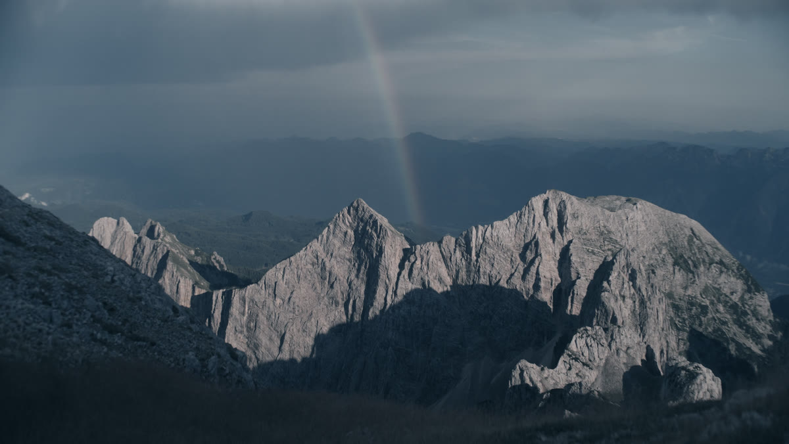
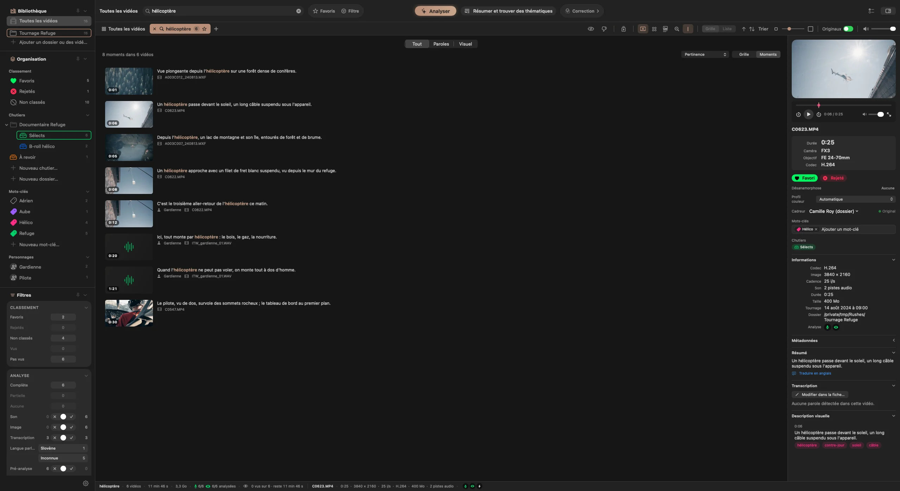

MACOS · BIENTÔT SUR LE MAC APP STORE
L'IA d'Eye Derush écoute et regarde vos rushs, puis retrouve chaque moment — par un mot, ou par le sens.

Appuyez sur une touche
CHERCHER
Une recherche propulsée par l'IA, qui comprend le contexte de chaque plan. Chaque résultat s'ouvre à la seconde près.
Dans la transcription et ses traductions, sans souci d'accents ni de majuscules.
L'IA retrouve un passage qui dit la même chose avec d'autres mots.
Un clic droit sur un résultat ramène les passages les plus proches.

L'app · Recherche « hélicoptère » : ce qui est dit, et ce qui est filmé
LES MODULES
Un rush en slovène, en japonais ou en portugais devient un texte qui se cherche, puis une traduction en français ou en anglais.
Chaque voix a son nom dans la transcription. Cliquez une phrase, le plan s'ouvre là.
Deux LUT l'une sur l'autre, appliquées à l'écran seulement : vos fichiers ne sont jamais modifiés. S-Log3, C-Log, V-Log, HLG…
Le catalogue emporte une copie légère de chaque plan. Dérushez dans le train, en avion ou sur le canapé — laissez les disques au bureau.
Glissez sur une vignette pour tracer une section, puis classez-la d'une touche : vert pour garder, rouge pour écarter.
Sur une sélection de plans, l'IA écrit ce qu'ils montrent et disent, puis repère les thématiques. Chacune devient un chutier d'un clic.
L'ANALYSE
Avant tout envoi, votre Mac repère chaque changement de plan et chaque parole. Moins d'images, moins de son : moins d'attente, moins d'heures comptées.
Mesuré sur notre propre catalogue : 2 173 plans, 27 heures de rushs en montagne
LE MONTAGE
Un moment, une section ou un chutier entier : le logiciel lit vos rushs là où ils sont.
Import direct dans la bibliothèque ouverte, ou fichier .fcpxml.
Un chutier dans le Media Pool du projet ouvert.
Un fichier .xml : chutiers, plans, et sections en sous-plans.
L'analyse par l'IA se paie en crédits ou en abonnement, selon vos besoins. Sans analyse, l'app sert pour tout le reste. Prix annoncés à la sortie.